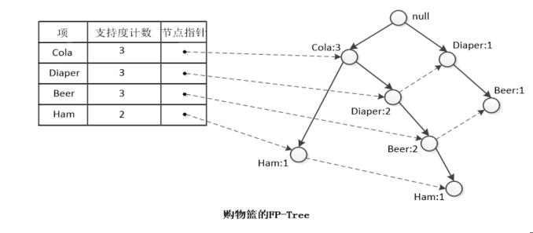
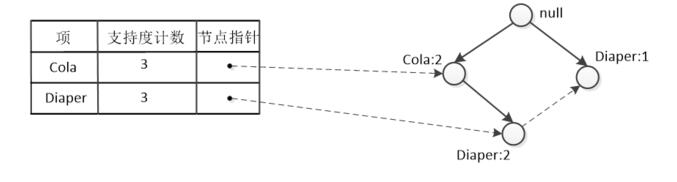

FP-Group 算法
引言
在关联分析中，频繁项集的挖掘最常用到的就是 Aprior 算法.Aprior 算法是一种先产生 候选项集 在检验是否频繁的 产生-测试 的方法。这种方法有种弊端：当数据集很大的时候，需要不断扫描数据集造成运行效率很低。而 FP-Group 算法就很好的解决了这个问题。他的思路是吧数据集中的事务映射到一棵 FP-Tree 上面，在根据这颗树找出频繁项集。FP-Tree 的构建过程只需要扫描两次数据集。
示例
某店铺购物篮的数据:
TID Items
001 Cola, Egg, Ham
002 Cola, Diaper, Beer
003 Cola, Diaper, Beer, Ham
004 Diaper, Beer
TID 代表交易流水号，Items代表一次交易的商品。
首先，FP-Growth 算法的任务hi找出数据集中的 频繁项集
然后，FP-Growth 算法的步骤大体上可以分为两步:(1)FP-Tree 的构建 (2)FP-Tree 上频繁项集的挖掘
FP-Tree 的构造
扫描一遍数据库，找出频繁项的列表 L ,然后按照
支持度计数递减排序。即：L = <(COla:3),(Diaper:3),(Beer:3),(Ham:2)>
再次扫描数据库，由每个事物不断构建 TP-Tree:
(1) TP-Tree 的根节点为 NULL
(2) 从数据库中取出事物，按照 L 排序，然后把每个项逐个添加到 FP-Tree 的分支上去。例如事物 001 排序后为
{Cola,Ham}，在根节点上加一颗子树Cola-Ham；事物 002 排序后为{Cola,Diaper,Beer}，因为根节点上一节有个子树节点Cola，所以可以共用该节点，在Cola节点上加一颗子树Diaper-Beer，同时 Cola 的计数加 1；事物003可与树通用节点 Cola-Diaper-Deer，所以只需要在 Beer后面加上一个 Ham，同时把 Cola,Diaper,Beer的计数加1即可…FP-Tree 还有一样东西-头节点表。作用是将所有相同的项链接起来，这样比较容易遍历。
最后得到的FP-Tree如下:

构造 FP-Tree 的伪代码如下：
算法：FP-Tree 构造算法 |
从 FP-Tree 提取频繁项集
相对而言，FP-Tree 的构造比较简单，而从 FP-Tree 提取频繁项集比较难理解。其中出现了几个新名词，下面针对购物篮的 FP-Tree 进行讲解吧。
求以”Ham”为后缀的频繁项集:
· 根据头节点表找出 “Ham” 结尾的路径：
· “Ham” 的两个前缀路径 {(Cola:1),(Cola Diaper Beer:1)} 构成了 Ham 的 条件模式基，注意条件模式基的计数都定义为了 Ham 的计数。
· 根据 条件模式基 构建 Ham 的 条件 FP-树：因为 Ham 的条件模式基中 Diaper、Beer 只出现了一次，Coal 出现了两次，所以 Diaper、Beer 是 非频繁项，不包含在 Ham 的条件FP-树种。
· Ham 的条件FP-树只有一个分支 条件频繁项集 {Cola:2}。
· 条件频繁项集 Cola:2 和后缀模式 Ham 合并，得到 频繁项集 {Cola Ham:2}。
求以 Beer 为后缀的频繁项集：
· Beer 的 条件模式基 有 {(Cola Diaper:2),(Diaper:1)}。
· Beer 的 条件FP-树如下：
· Beer 为后缀的频繁项集为 {Cola Diaper Beer:2}、{Diaper Beer:2}、{Cola Beer:2}

求以 Diaper 为后缀的频繁项集：
条件模式基为 {(Cola:2)}，最后得到频繁项集 {Cola Diaper:2}。
综上，得到的频繁项集有:{Cola Ham:2}、{Cola Beer:2}、{Diaper Beer:2}、{Cola Diaper:2}、{Cola Diaper Beer:2}
从 FP-Tree 提取频繁项集的主要步骤是:
对于每个频繁项，通过以下步骤来求他的`条件频繁项集`:
· 找出它的 `条件模式基`
· 把 `条件模式基` 当做事务集去建造一棵树，这棵树不叫 `FP-Tree`，而是叫做 `条件FP-Tree`。
· 对这颗 `条件FP-Tree` 递归以上操作，即找这颗`条件FP-Tree` 上的 `子条件频繁项集`。
· 以上找到的都是该`频繁项`的`条件频繁项`而已，所以每次递归都需要把 `条件频繁项集` 和 该`频繁项集`拼接起来才是我们最终要求的 `频繁项集`。
伪代码：
算法：FP-Growth(FP-Tree,α); |
本文转载，感谢原作者（原文链接：http://blog.csdn.net/bone_ace/article/details/46669699）
哦